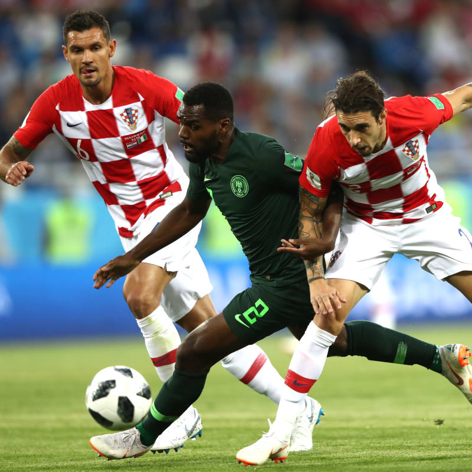

On the
Pitch—
The Super Eagles arrived at the World Cup in Russia as underdogs. Their group included Iceland, fresh off a roaring Euro 2016 run, Argentina, footballing royalty featuring one of the all-time greats Lionel Messi, and Croatia, eventual tournament runner-ups.


Nigeria began the tournament in their muted away kits, falling 2-0 to Croatia. Six days later they returned to the field and would cruise to a 2-0 victory courtesy of two gorgeous strikes from Ahmed Musa. Their World Cup journey would come to an end against Argentina on Matchday 3 though as they fell 2-1, with Marcos Rojo's 86th minute goal breaking Nigerian hearts.